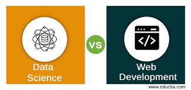
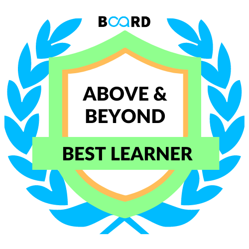
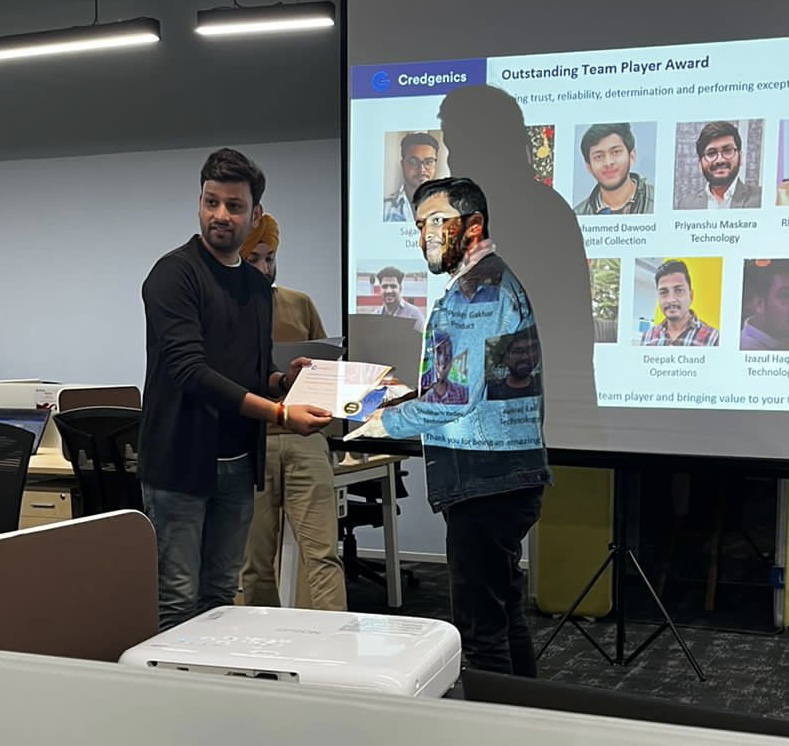

Hello Everyone, First of all, Thank you for visiting my Website.
Let me tell you an intersting story of a teen who don't have any interest in coding two years back and now he is one of the favourite Data Analyst of the Organization.
Okay, Let's start the story from the begining.
Hello Everyone, I am Mohammad Dawood. I am from a small city of India called Allahabad. I have completed my early education from a Government School and for the bachelors I enrolled in Allahabad University which is also called the Oxford of the East. My Grandmother used to tell me the stories of many Great and Brave kings which creates a interest in me for the story telling and History.
This becomes one of the reasons for me to choosing Modern Indian History and English as my subjects. I am a focused learner and everything is going smoothly until the day COVID-19 knocks our door.
The Lockdown was imposed and the whole country is in their house. We have a lot of free time to spend on. Coding is a skill which I aim to learn from a long time and now God have given me a perfect scenerio to work on this.
Upgrad is a one of the famous online coding learning platform so i decided to enroll in their learning program called Programming with Python. Within a short span of time, I get very interested in Programming and within three months of Learning, I started writing complex syntax on my own.
Dilemma | Data-Science VS Web-Development

After getting the basics Knowledge of Syntax and Programming Logics,
I have to choose one path on which I should focus more and be the master of that part. Web Development and Software Engineering is a famous profession from a very long time.
As a Kid, I always fascinated about the cool stuffs a software engineers do. On the other hand, Data Science is something which was introduced to me an year earlier. Even in this short span of time, I got very familiar of Data Science and really loves doing the Exploratory Data Analysis and Model Predection. Now when i am liking both the profession and skills,
it's getting harder for me to choose any one between the two. I cannot choose it blindly as it is very sensitive issue and may decide what I will do in Future and how much time i will take to acheive my aim.
Although I learned a lot from my School and college but still i know as a man from Humanities as a backgroud, it will hard for me to crack a job in both the areas.
I always tried to strengthen my weak points and now I decide to choose a career where my backgroud doesn't really matter. Based on a month long online research, discussions with family, freinds, career coachs and mentors, I finally decide to make my career in Data-Science domain. Data-Science as a carrier is a very booming and trending at that time which makes my timing perfect to make into this profession.
Board Infinity and An Arts Guy.

Although there are several online skills enchancement institutions like Upgrad, simplilearn, sololearn and Masai School.
My search for the most suitable institutions starts and I start my research on Google, Youtube and Linkedin. After a month long research, I decided to enroll in Board Infinity for my Data-Science Program.
I am the only learner of Board Infinity who is from Arts backgroud. I am aware of the scenerio that if I am not better than my fellow learners, Companies will surely prefer them as they are Engineers.
So No Matter which skills I am learning, I always have to be better than everyone else. I always have to work more and I have to create some really cool stuff to decorate my resume to outshadow my Arts degree.
As an arts students, there are some basic topics on which the professors need to explain to me which other students have already understand in their college studies, But I am very grateful of Board Infinity professors for helping and supporting me.
Some of the life lessons which I received from the professors and mentors helped me a lot in my initial career. Very soon, because of my work,
all the professors start recognizing me and many times my absense is noticable by the professors. With good Grades, I won star Performer award from Board Infinity and with the help of their Placement team, very soon I placed in a Start-up Called Credgenics.
INTERNSHIP
As a fresher, without any guesses how Corporate World works, I start working in a fast paced startup with an Internship and post internship offer letter.
Many times, my office colleauges were amazed to see me working really hard to make an impact in the Bussiness but it's not something where i stop. I know there is still a lot more to achieve.
My first two months of internship is normal, where I am realizing and understanding of the Corporate world works.
From the third and last month of my internship, When I start contributing my skills and creativity, Our team performance grows rapidly.
Before my internship ends, my name become famous across the Organization and I become one of the favourite employee of Managers.
First Job

After the complition of my Internship, I got multiple offers from many Organization with a lot of other benefits.
I discussed this with my managers, as I have already showed them my potential, they didn't think twice to offer me a new and better offer.
This way, I started my First job in the same Organization where I did my internship. I worked with many clients like Hdfc Bank, IIFL Finance, Yes Bank, DMI Finance and Mahindra Finance.
This job helps me to grow in various aspect of life. I set my focus in automating client dashboards and reports which is going to be sent on a daily basis.
Recently I created my first app for HDFC Bank with the help of Python and TKInter. Till today, I Automated Dashboards and Reports for more than a dozen clients.
Although I didn't complete my first year in the Organization I feel that I have learn a lot from them and gain a lot of experience from it.
I feel very fortunate for this kind of company and managers in my initial year. I am very thankful to God for helping me and standing by my side througout the life.